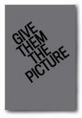

$-$ Buy Catalogues . . .

Give Them the Picture is a literary extension of the Curatorial Practice thesis exhibition currently on view in the Wattis. Rather than a traditional exhibition catalog, it is an anthology of essays taken from La Mamelle and ART COM magazines. It collects and places in dialogue 24 articles penned by critics and artists such as La Mamelle / ART COM founder Carl Loeffler, Lynn Hershman, Richard Irwin, Anna Couey, and Linda Montano, plus interviews with artists such as Douglas Davis and Eleanor Antin.
This collection represents the complexity of the ideas presented in the exhibition as they were grappled with at the time of their original publication, and it also positions them as contemporary questions; particularly relevant is the mediation of performance. It also features conversations between the curators and two of La Mamelle / ART COM's key figures, Nancy Frank and Darlene Tong.
Give Them the Picture is a co-publication between the CCA Wattis Institute for Contemporary Arts and the Graduate Program in Curatorial Practice. Generous support for God Only Knows Who the Audience Is: Performance, Video, and Television Through the Lens of La Mamelle / ART COM has been provided by the Live Oak Foundation and Roger & Victoria Sant. Designed by Jon Sueda / Stripe.
Graduate Program in Curatorial Practice at CCA and CCA Wattis Institute for Contemporary Arts, 2011
Paperback, 203 pages
$20.00
There are a limited number of this publication left.
Order now here: